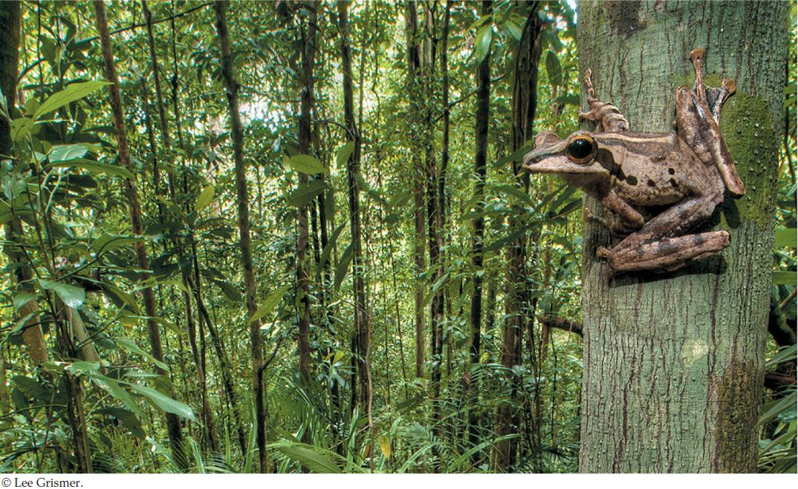

| 1 | Principles of Life |
|
KEY CONCEPTS
1.1Living Organisms Share Common Aspects of Structure, Function, and Energy Flow 1.2Life Depends on Organization and Energy 1.3Genetic Systems Control the Flow, Exchange, Storage, and Use of Information 1.4Evolution Explains the Diversity as Well as the Unity of Life 1.5Science Is Based on Quantitative Observations, Experiments, and Reasoning |

What principles of life are illustrated in this scene?
|
When you take a walk through the woods and fields or a park near your home, what do you see? Like most people, you probably notice the trees, colorful flowers, and some animals. But do you spend more than a little time thinking about how these living things survive, reproduce, interact with one another, or affect their environment? With the introduction to biology in this book, we would like to inspire you to ask questions about what life is, how living systems work, and how the living world came to be as we observe it today.
Biologists have amassed a huge amount of information about the living world, and some introductory biology classes focus on memorizing these details. In this book we take a different approach, focusing on the major principles of life that underlie everything in biology.
What do we mean by “principles of life”? Look at the photograph. Why is the view so overwhelmingly green? A fundamental principle of life, namely that all living organisms require energy to grow, move, reproduce, and maintain their bodies, can explain the color. Ultimately, most of that energy comes from the sun. The leaves of plants contain chlorophyll, a green pigment that captures energy from the sun and uses it to transform water and carbon dioxide into sugar and oxygen (in the process called photosynthesis). That sugar stores some of the energy from the sun in its chemical bonds. The plant, or other organisms that eat the plant, can then obtain energy by breaking down the sugar. The frog in the photo used energy to climb up the tree. That energy came from molecules in the bodies of insects eaten by the frog. The insects, in turn, had built up their bodies by ingesting tissues of plant leaves, which grew by using some of the sun’s energy captured through photosynthesis. The frog, like the plants, is ultimately solar-powered, as is the human observer who took this photograph.
The photograph also illustrates other principles of biology. One is that living organisms often survive and thrive by interacting with one another in complex ways. You probably noticed the frog and the trees. But did you notice the patches of growth on the trunk of the tree? Most of those are lichens, a complex interaction between a fungus and a photosynthetic organism (in this case, a kind of alga). In lichens, the fungus and the alga depend on each other for survival. Many other organisms in this scene are too small to be seen, but they are critical components for keeping this living system functioning over time.
After reading this book, you should understand the main principles of life. You’ll be able to describe how organisms capture and transform energy; pass genetic information to their offspring in reproduction; grow, develop, and behave; and interact with other organisms and with their physical environment. You will also have learned how this system of life on Earth evolved, and how it continues to change. May a walk in the park never be the same for you again!